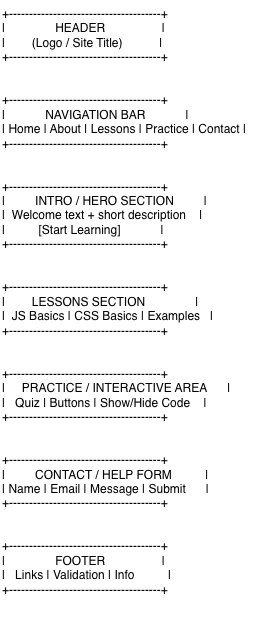
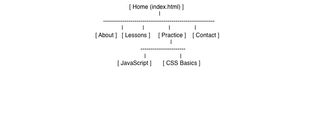

Project Overview
Project Name
CodeStart: A Beginner Guide to JavaScript and CSS
Project Overview
CodeStart is a beginner-friendly website designed to help students learn the basics of JavaScript and CSS. The purpose of this website is to provide simple lessons, clear examples, and practice activities that help new learners understand coding in an easier way. The website is meant to make beginner web development concepts feel less overwhelming by using organized content and interactive features.
Intended Users
- Beginner students who are new to coding
- My client, who wants to learn JavaScript and CSS
- Anyone interested in learning basic web development
Overview of Website Content
- Introductory information about the website and its purpose
- Basic JavaScript lessons
- Basic CSS lessons
- Interactive practice activities and examples
- A contact form for questions or help
Live Project
You can view the live CodeStart website here: Open CodeStart Project
Client Information
- Name: [Private]
- Organization/Institute/Business: Student / Beginner Learner
- Email Address: [Private]
- Phone Number: [Private]
Wireframe

View Wireframe
Site Map

View Site Map
Page Design
1. Home Page (index.html)
- Purpose of the Page: To introduce the website and explain its main purpose.
- Audience/Users of Page: All visitors, especially beginner learners.
- Content of the Page: Welcome message, short description, slideshow, and navigation links to the main sections of the website.
- Is user data entered on this page? No.
- Validation Needed: No validation is needed because users do not enter data on this page.
- Buttons, Hyperlinks, or Drop Downs: Navigation links, slideshow controls, and project links.
- Actions on the Page: Users can navigate to other pages and view the slideshow images.
- Special Notes: This page serves as the main entry point and includes an interactive slideshow.
2. About Page
- Purpose of the Page: To explain the website, its goals, and who it is for.
- Audience/Users of Page: Visitors who want more background information about the website.
- Content of the Page: Information about the project idea, target audience, learning goals, and why coding is useful.
- Is user data entered on this page? No.
- Validation Needed: No validation is needed because users do not enter data on this page.
- Buttons, Hyperlinks, or Drop Downs: Navigation links.
- Actions on the Page: Users can read information and move to another page through the navigation bar.
- Special Notes: This page helps users understand the purpose and direction of the website.
3. Lessons Page
- Purpose of the Page: To teach the basics of JavaScript and CSS in a simple format.
- Audience/Users of Page: Beginner coding students and new learners.
- Content of the Page: Topic explanations, short examples, beginner notes, and organized lesson sections.
- Is user data entered on this page? No.
- Validation Needed: No validation is needed because users do not enter data on this page.
- Buttons, Hyperlinks, or Drop Downs: Filter buttons and navigation links.
- Actions on the Page: Users can click buttons to switch between all lessons, JavaScript topics, and CSS topics.
- Special Notes: This page includes JavaScript filtering to organize lesson content clearly for beginners.
4. Practice Page
- Purpose of the Page: To help users practice what they learned through interactive examples and simple activities.
- Audience/Users of Page: Students using the lessons and wanting extra practice.
- Content of the Page: Mini quiz, examples, feedback, and coding practice prompts.
- Is user data entered on this page? Yes.
- Validation Needed: Yes, quiz questions should be answered before the score is shown.
- Buttons, Hyperlinks, or Drop Downs: Quiz button and navigation links.
- Actions on the Page: Users can answer quiz questions and receive score feedback dynamically.
- Special Notes: This page includes interactive JavaScript quiz functionality.
5. Contact Page
- Purpose of the Page: To allow users to ask questions or request help.
- Audience/Users of Page: Visitors and beginner learners who need support.
- Content of the Page: Contact form with fields for name, email, and message.
- Is user data entered on this page? Yes.
- Validation Needed: Yes, required fields must be completed and email must be in a valid format.
- Buttons, Hyperlinks, or Drop Downs: Submit button and navigation links.
- Actions on the Page: Users can type into the form and submit their questions after validation.
- Special Notes: This page focuses on simple communication and user support.
Dynamic Functionality on the Website
The website includes dynamic functionality using JavaScript to make the learning experience more interactive and helpful for beginner users.
- Home Page: A Swiper slideshow displays multiple images related to coding and learning.
- Lessons Page: JavaScript filter buttons allow users to view all lessons or only JavaScript or CSS topics.
- Practice Page: An interactive quiz lets users answer questions and receive a score instantly.
- Contact Page: JavaScript form validation checks that all required fields are completed and that the email is in a valid format before submission.
- All Project Pages: A scroll-to-top button improves navigation and usability.
Example URLs of websites with similar interactivity:
Notes
This project overview page was created by Mayar Alharazi for ITIS 3135. The project is based on a beginner learning website idea for a real client. References and planning tools used for this assignment include Draw.io, W3Schools, MDN Web Docs, and Swiper.js.
Date and Time: 04/05/2026 2:00 pm